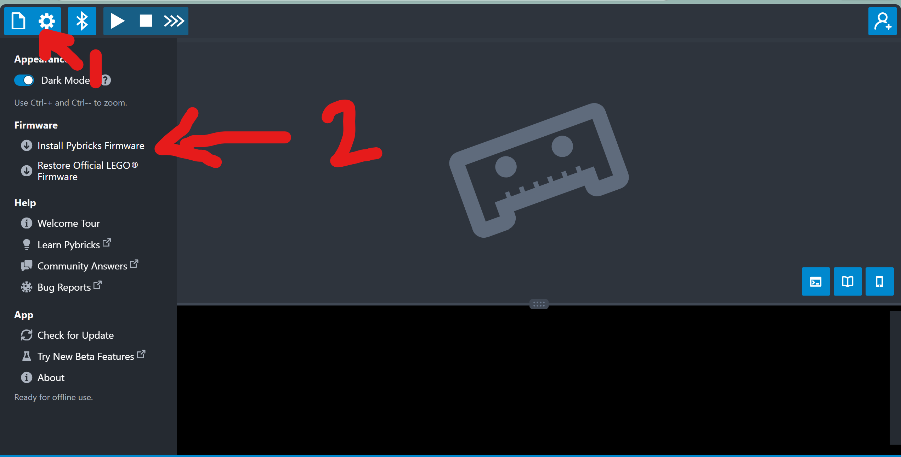
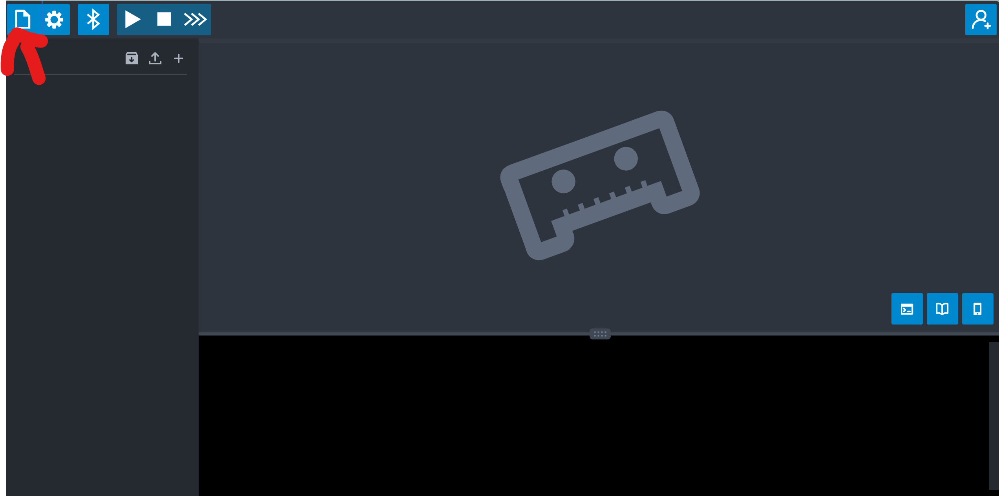
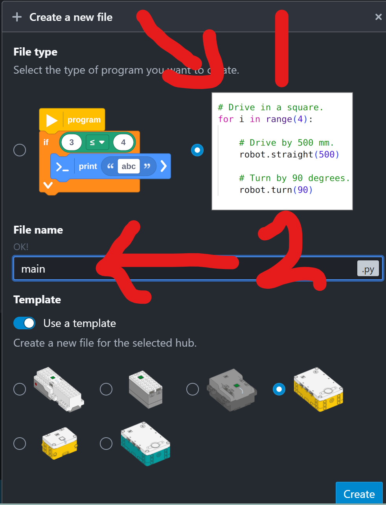

Build Day
Day 1 · Robot Rockstars · SPIKE Prime + Pybricks
2026-07-14
A. Welcome to the WRO
The World Robot Olympiad — robots that think for themselves.
Hands up! ✋
Stand up or hands up — who has…
- 🧱 …built something out of LEGO?
- 💻 …written a line of code?
- 🤖 …watched a robot competition — live?
By the end of today you’ll have built a real competition robot with your own hands — and switched it on. The code starts next session.
Robots that think for themselves
- Teams build and program a robot that solves missions all on its own.
- Every year: a brand-new mission — nobody starts with last year’s answers.
- Win here → national final → the world final.
Our category
RoboMission · Elementary — the robot drives a mission on a printed mat, on a real competition table.
Watch a real run
WRO 2026 Elementary — the Robot Rockstars field. In five weeks, this is your table. (watch on YouTube)
Quick quiz 🚨
Your robot is mid-run — and it’s heading straight off the table. What can you do?
Grab it? Shout “STOP”? Grab a joystick?
Nothing. You press one start button — after that, the robot is completely alone. Everything it does comes from the code you wrote.
- Each run: at most 2 minutes · robot starts inside a 25 × 25 × 25 cm box.
This year’s stage: Robot Rockstars 🎸
The robot sets up a concert — all by itself:
- 🥁 Set up the instruments on stage
- 🔌 Plug in the cables
- 🎤 Deliver the microphone to the singer
- 🔊 Don’t bump the speakers — careful driving counts
- 🎵 Crack the color notes — new positions every round, so the robot must look and decide
Vote: which one sounds hardest? 🗳️
One more twist — the Surprise Rule 🎁
On competition morning, judges may reveal a surprise — a new task or a changed rule. Teams reprogram on the spot.
That’s why we understand our code — never memorize it. Every team member can explain the whole robot. No “that’s my partner’s part.”
Five weeks, five new powers
| Week | Your robot learns to… |
|---|---|
| 1 | Build, drive straight, and sense |
| 2 | Score its first missions · teams of 2 form |
| 3 | Chain everything into one big run |
| 4 | Do it every single time |
| 5 | Sense color — and compete |
A run that works every time beats a fancy one that sometimes doesn’t. You leave with real Python, a robot you built, and a certificate.
B. The Bench
Before we touch a brick — know your workspace.
Bench rules
- 🔋 USB-C charging — hubs charge by cable; know where yours lives.
- 🗂️ Sort your parts into the tray — a lost axle stops a build.
- 🤖 One student, one robot — today everyone builds their own.
- 🔌 No internet connection — wireless is off at competition, so we practice that way from day one.
Bench tour
Find the charging station, the parts bins, the mat, and the return tray — before your hands touch a brick.
C. Build a GREAT Base
The LEGO Education Advanced Driving Base — today’s main event.
The build — 4 modules, one robot
- The base splits into 4 sub-assemblies — build them one at a time, then snap them together.
- 2 large motors drive the wheels · 2 medium motors run tools · 2 color sensors see the mat.
- Follow the official LEGO instructions, page by page — no freestyling on day one.
- Plan for 2–3 hours. That’s normal — this is a real competition chassis, not a toy set.
The instructions
LEGO Education — Assembling an Advanced Driving Base — building-instruction booklets for every sub-assembly.
Pace yourself — module checkpoints 🏁
| Checkpoint | You should have… |
|---|---|
| ☑ 1 | Drive module — both large motors mounted |
| ☑ 2 | Wheels on — it rolls when you push it |
| ☑ 3 | Tool motors + sensors attached |
| ☑ 4 | Hub seated, all cables clicked in |
Lightning Builder ⚡
A bonus for the first finishers whose robot passes the quality checks — a carrot, not a cutoff. If you don’t finish today, you finish in tomorrow’s warm-up. No penalty.
What makes a base GREAT?
Before you call it done, run the four checks:
- 🔌 Click check — every cable pushed in until it clicks, routed away from the wheels.
- 🪞 Twin check — left side mirrors right. Compare with the booklet, not your memory.
- Shake check — lift it, shake gently: nothing rattles, nothing drops.
- 🛞 Roll check — push it across the mat: rolls straight, nothing drags.
A base that passes all four beats a fancy one that loses a wheel mid-run.
6 ports, 6 jobs
The hub has only 6 ports — and we use every one
A left drive · E right drive · C/D tool motors · B/F color sensors. No port left over — so no distance sensor. Later, you’ll learn a cooler trick: the motors themselves can feel a wall.
- Plug each cable into its exact port from the start — the code we write all season expects this map.
D. Power On!
Your robot’s first breath.
Install Pybricks first 🧑💻
Before the hub can run our Python, it needs new firmware — Pybricks.
The editor
code.pybricks.com — the browser code editor we use all season. No install, no account. Bookmark it.
- Open code.pybricks.com.
- Click the ⚙️ gear icon → Install Pybricks Firmware.
- Plug the hub in by USB-C when asked, and wait for the progress bar to finish.

Open the file panel
Click the file icon (top-left) to open the file panel — this is where every program you write all season will live.

Create your first file
Click +, choose program, name it main, pick your hub, then Create — Pybricks drops in a starter template.

One hub, one main.py — the file the coach’s D1 program runs from today, and the file you write into starting next session.
Bring it to life
- Charge check — plug in USB-C; the battery light tells the truth.
- Press the center button — hold until the light comes on.
- Watch the status light — that blink is the hub saying “I’m alive, give me a program.”
- Connect by cable to the laptop — hear it beep. 🔊
That beep is a program — a few lines of Python that the coach sent to your robot. Next session, you write it.
E. The Gate
Build it. Check it. Wake it up.
Today’s gate
You’re done today when…
Your base passes the four checks, every cable is in the right port, and your hub powers on and beeps.
Next session — Make It Move: your first race, your first program, and what speed really is — measured on your own robot.
Tonight’s mission 🎬
You built a robot today.
Optional at home: WRO-Learn — Fundamentals of Mechanics (short videos — pure enrichment; everything you need is delivered in class).